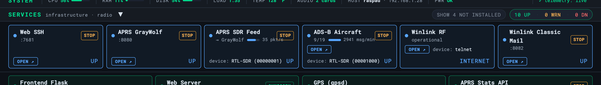

Service Controls
START / STOP buttons on the dashboard — no SSH required
By default the dashboard shows each companion service’s status but can’t change it — restarting GrayWolf or switching to OpenWebRX would mean SSHing in. The optional service-controls step adds START / STOP buttons to the service cards so you never have to.

Enable it from the setup menu, or directly:
python3 scripts/enable-service-controls.py # grant for the current user
python3 scripts/enable-service-controls.py --user pi # grant for a specific user
python3 scripts/enable-service-controls.py --check # report status
python3 scripts/enable-service-controls.py --disable # remove the permissionHow it’s scoped
It installs a narrow, validated sudoers rule
(/etc/sudoers.d/oasis-service-controls) that allows only
systemctl start|stop|restart|enable|disable for the known OASIS units
(GrayWolf, Winlink, Kiwix, webssh, OpenWebRX, the APRS SDR feed) plus one fixed
read-only tcpdump for the APRS feed meter — and nothing else. The web
endpoints run sudo -n …, so the OS authorises each exact command and
no password ever touches the web layer.
The OASIS web server’s own unit is deliberately excluded — stopping it would kill the dashboard with no way to bring it back from the browser. The rule is opt-in and fully reversible with --disable.
OpenWebRX’s card needs this rule too: starting it there also flips the APRS stack, because the RTL-SDR can only feed one consumer at a time.
Troubleshooting
| Symptom | Cause & fix |
|---|---|
| No START / STOP buttons on the cards | Service controls aren’t enabled. Turn them on in setup — it installs a narrow sudoers rule so the web UI can (only) start/stop those units. |
| START does nothing / silently fails | The sudoers scope is missing or the unit errored. Check journalctl -u <service> -e. |
| A radio service refuses to start | The RTL-SDR is held by another consumer (APRS feed, ADS-B, OpenWebRX, satellite listen). Stop the other one first — the dongle is exclusive. |